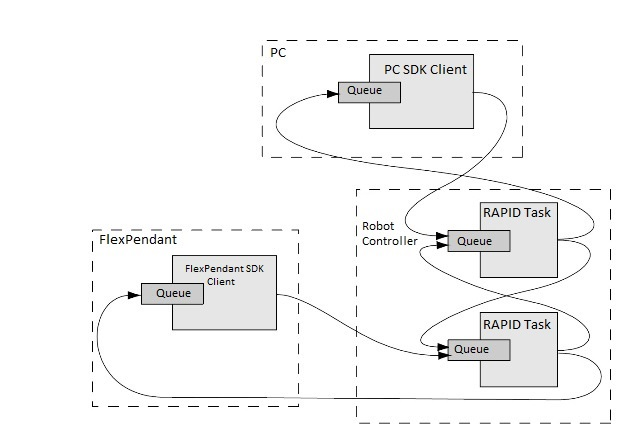
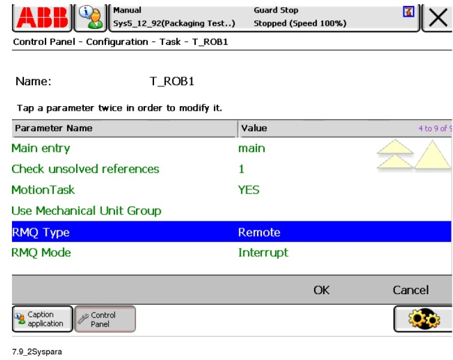

Messaging domain
Overview
The Messaging domain of the PC SDK can be used to send and receive data between a PC SDK application and a RAPID task.
The corresponding RAPID functionality, RAPID Message Queue, includes RAPID data types and RAPID instructions and functions for sending and receiving data. It enables communication between RAPID tasks or between a RAPID task and a PC SDK application.
This section provides information about how to implement messaging in a PC SDK application. To make it work it is necessary to do part of the implementation in RAPID. In order to show how this can be done, a code example in C# and RAPID is provided at the end of the section.
Note
For more information on how to implement messaging in RAPID, see Application manual - Robot communication and I/O Control.
RobotWare option
The functionality in RAPID that is needed to utilize messaging - RAPID Message Queue - is included in the RobotWare options PC Interface, FlexPendant Interface and Multitasking. As PC Interface is required on a robot controller to be used with a PC SDK client, this means no extra option is needed to start using RAPID Message Queue with a PC SDK application.
Messaging illustration
The following illustration shows possible senders and receivers in the robot system. The arrows represent ways to communicate by posting a message to a queue.

Note
In principle, messages might as well be sent between a PC SDK client and a PC SDK application running on the FlexPendant.
Benefits
Together with RAPID Message Queue the functionality of the Messaging domain represent a new, flexible way for a
PC SDK application to interact with a RAPID task.
Messaging is usually done when a RAPID task is executing, but it is also possible to send a message to a RAPID task when it has been stopped. The RAPID interrupt will then occur once the RAPID task has been started.
A simple example of usage would be to set a flag from a PC SDK application in order to control the program flow in the RAPID program.
Note
Sending messages can be done in both manual and auto mode. As opposed to using RapidData to modify a
RAPID variable no mastership is required.
The Messaging namespace
The Microsoft Windows operating system provides mechanisms for facilitating communications and data sharing between applications. Collectively, activities enabled by these mechanisms are called Interprocess communications (IPC).
These are the classes and enumerations available in the Messaging namespace:
| Classes |
|---|
| ABB.Robotics.Controllers.Controller.Ipc |
| ABB.Robotics.Controllers.Messaging.IpcMessage |
| ABB.Robotics.Controllers.Messaging.IpcQueue |
| Enumerations |
|---|
| ABB.Robotics.Controllers.Messaging.IpcReturnType |
The Ipc class is used to handle message
queues with methods like
GetQueue(String),
CreateQueue(String, Int32, Int32),
DeleteQueue(Int32) and so on. When you have an IpcQueue object you
can use its Send(IpcMessage) method
to send an IpcMessage to a RAPID task or its
Receive(Int32, IpcMessage)
method to receive a message from a RAPID task.
When sending a message you use an existing queue in the controller as the IpcQueue object.
The naming principle of queues in the controller is using the name of the corresponding task prefixed with
“RMQ_”, e.g “RMQ_T_ROB1”. To receive a message from RAPID you must first create your own message queue and use that
object with the
Receive(Int32, IpcMessage)
method.
Note
When the execution context in a RAPID task is lost, for example when the program pointer is moved to main, the corresponding queue is emptied.
Basic approach
To utilize messaging in a PC SDK application, you need to do the implementation both in RAPID and in the PC application.
To send data from a PC application and receive it in a RAPID task:
In the PC application connect to the queue of the RAPID task.
Create the message.
Send the message.
In the RAPID program set up a trap routine that reads the message. Connect an interrupt so that the trap routine is called each time a new message appears.
For a complete code example using this scenario, see Code example.
What can be sent in a message?
In RAPID there is a rmqmessage data type. In the PC SDK the corresponding type is IpcMessage. An IpcMessage object
stores the actual data in the message, but also information about message size, who the sender is and so on.
The data in a message is a pretty-printed string with data type name (and array dimensions) followed by the actual data value. The data type can be any RAPID data type. Arrays and user defined records are allowed.
Message data - examples:
“robtarget;[[930,0,1455],[1,0,0,0],[0,0,0,0],[9E9,9E9,9E9,9E9,9E9,9E9]]”
“string;“Hello world!””
“num;23”
“bool;FALSE”
“bool{2, 2};[[TRUE,TRUE],[FALSE,FALSE]]”
“msgrec;[100,200]” (user defined data type)
The method IpcMessage.SetData is used to fill the IpcMessage with the appropriate data. Likewise, the GetData method
retrieves the data from an IpcMessage object.
Note
The IpcMessage.Data is set and retrieved as a byte array, SetData(byte[]data) and byte[] GetData().
This means you must convert the message data string to a byte array before calling the SetData method.
It may look like this in C#:
Byte[] data = new UTF8Encoding().GetBytes("string;\"Hello world\"");
Note
The RAPID program can specify what RAPID data type it expects to receive by connecting it to a TRAP routine. A message containing data of a data type that no interrupt is connected to will be discarded with only an event log warning.
RAPID Message Queue system parameters
This is a brief description of each system parameter of RAPID Message Queue. For further information, see the respective parameter in Technical reference manual-System parameters.
These parameters belong to the Task type in the Controller topic:
| Parameter | Description |
|---|---|
| RmqType | The following values are possible: None - Disables the RAPID Message Queue functionality in this RAPID task. This is the default value. Internal - Enables the RAPID Message Queue for local usage on the controller. Remote - Enables the RAPID Message Queue for local usage and for PC and FlexPendant applications. |
| RmqMode | Interrupt mode - A message can be received either by connecting a trap routine to a specified message type or by using the sendwait functionality. Any messages that are not the answer to an active send-wait instruction or have the type connected to a trap routine will be discarded. This is the default mode. Synchronous mode - All messages will be queued and can only be received through the new read-wait instruction RMQReadWait. No messages will be discarded unless the queue is full. The send-wait instruction is not available in this mode. |
| RmqMaxMsgSize | The maximum data size, in bytes, for a message. The default value is 350. The value cannot be changed in RobotStudio or on the FlexPendant. |
| RmqMaxNoOfMsg | Maximum number of messages in queue. The default value is 5. The value cannot be changed in RobotStudio or on the FlexPendant. |
Note
To read the values of these system parameter from the PC SDK you use the IpcQueue properties RemoteAcessible,
MessageSizeLimit and Capacity.
Remote RmqType
The system parameter RmqType must be set to Remote to enable messaging between RAPID and PC SDK:

Code example
This simple messaging example can be tested with a virtual or a real controller. The system parameter RmqType must be set to as shown in RAPIDMessage Queue system parameters.
The following code sample creates a message and sends it to a RAPID task, which reads it and sets a RAPID variable accordingly. Then an “Acknowledged” message is sent back to the PC SDK queue. Finally, the PC SDK application launches the received message in a Message Box.
PC SDK - C#
A message is created and sent to the RAPID queue “RMQ_T_ROB1”. An answer message is then received from RAPID and launched in a Message Box.
//declarations
private Controller c;
private IpcQueue tRob1Queue;
private IpcQueue myQueue;
private IpcMessage sendMessage;
private IpcMessage recMessage;
...
//initiation code, eg in constructor
c = new Controller(); //default ctrl used here (App.config)
//get T_ROB1 queue to send msgs to RAPID task
tRob1Queue = c.Ipc.GetQueue("RMQ_T_ROB1");
//create my own PC SDK queue to receive msgs
if (!c.Ipc.Exists("RAB_Q"))
{
myQueue = c.Ipc.CreateQueue("PC_SDK_Q", 5, Ipc.IPC_MAXMSGSIZE);
myQueue = c.Ipc.GetQueue("PC_SDK_Q");
}
//Create IpcMessage objects for sending and receiving
sendMessage = new IpcMessage();
recMessage = new IpcMessage();
...
//in an event handler, eg. button_Click
SendMessage(true);
CheckReturnMsg();
...
public void SendMessage(bool boolMsg)
{
Byte[] data = null;
//Create message data
if (boolMsg)
{
data = new UTF8Encoding().GetBytes("bool;TRUE");
}
else
{
data = new UTF8Encoding().GetBytes("bool;FALSE");
}
//Place data and sender information in message
sendMessage.SetData(data);
sendMessage.Sender = myQueue.QueueId;
//Send message to the RAPID queue
tRob1Queue.Send(sendMessage);
}
private void CheckReturnMsg()
{
IpcReturnType ret = IpcReturnType.Timeout;
string answer = string.Empty;
int timeout = 5000;
//Check for msg in the PC SDK queue
ret = myQueue.Receive(timeout, recMessage);
if (ret == IpcReturnType.OK)
{
//convert msg data to string
answer = new UTF8Encoding().GetString(recMessage.Data);
MessageBox.Show(answer);
//MessageBox should show: string;"Acknowledged"
}
else
{
MessageBox.Show("Timeout!");
}
}
RAPID
A trap is created for a message of data type bool. In the trap, the value of the message data is assigned to the
variable. Then an Acknowledged message is sent back to the PC SDK client. In main the WHILE loop is executed until
a message with a TRUE value is received.
MODULE RAB_COMMUNICATION
VAR bool flag := FALSE;
VAR intnum connectnum;
PROC main()
CONNECT connectnum WITH RABMsgs;
IRMQMessage flag, connectnum;
WHILE flag = FALSE DO
!do something, eg. normal processing...
WaitTime 3;
ENDWHILE
!PC SDK message received - do something...
TPWrite "Message from PC SDK, will now...";
IDelete connectnum;
EXIT;
ENDPROC
TRAP RABMsgs
VAR rmqmessage msg;
VAR rmqheader header;
VAR rmqslot rabclient;
VAR num userdef;
VAR string ack := "Acknowledged";
RMQGetMessage msg;
RMQGetMsgHeader msg \Header:=header
\SenderId:=rabclient\UserDef:=userdef;
!check data type and assign value to flag variable
IF header.datatype = "bool" THEN
RMQGetMsgData msg, flag;
!return receipt to sender
RMQSendMessage rabclient, ack;
ELSE
TPWrite "Unknown data received in RABMsgs...";
ENDIF
ENDTRAP
ENDMODULE
Note
Error handling should be implemented in C# and in RAPID.